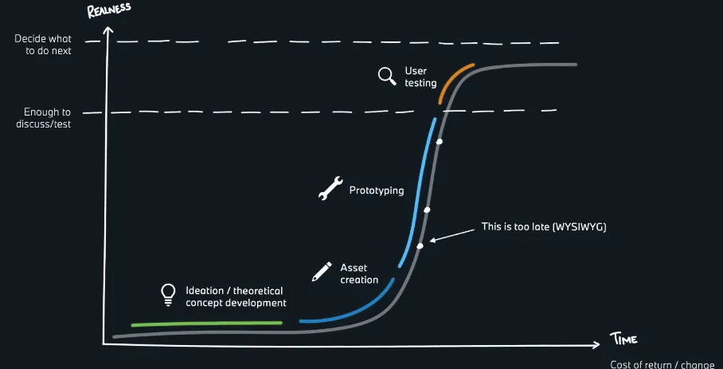
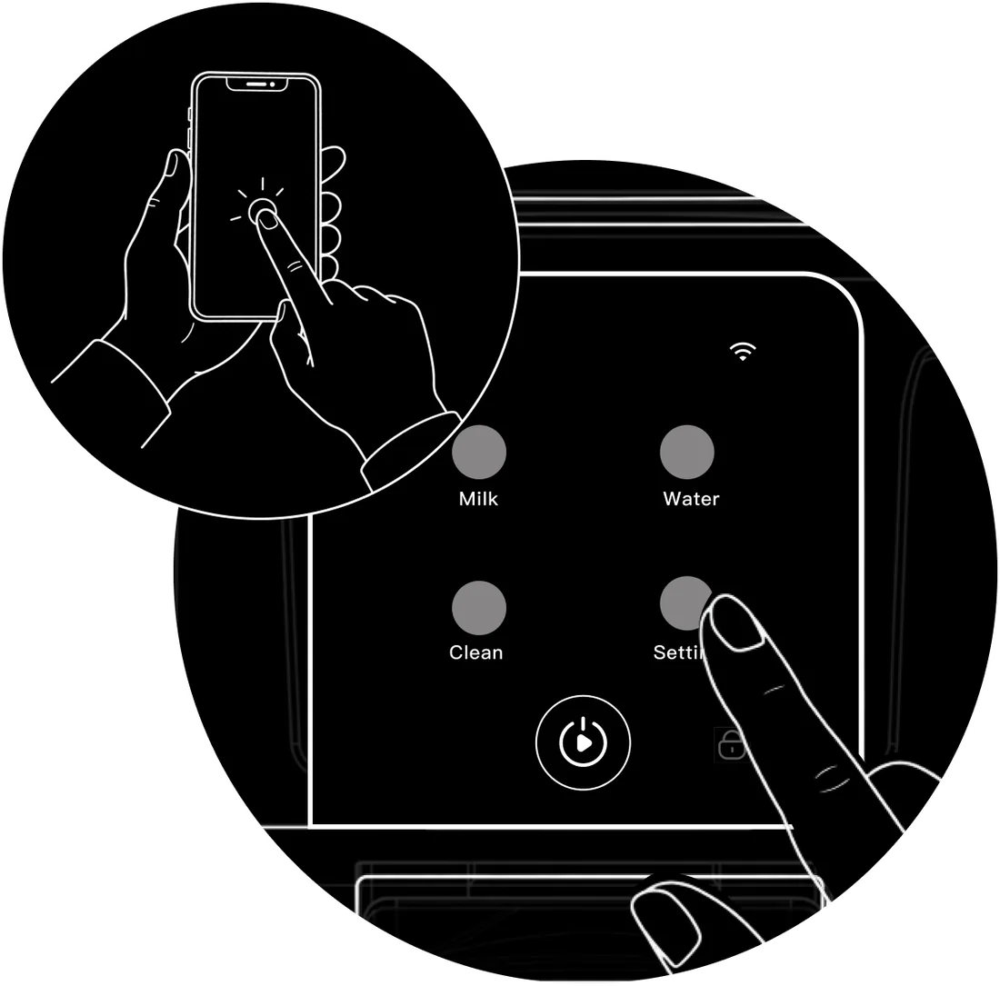
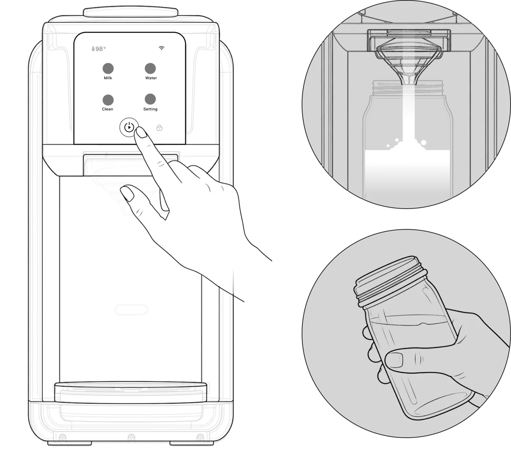

之前 · Before
以月为单位“设计-原型-验证”一个循环
过去输出几版设计方案，评审选定一两版，需要代工厂打样原型机（大概一个月）才能上手验证可用性问题。时间拖延太长，每次“设计-原型-验证”一个循环都是以月为单位，效率极其低效。

旧流程
- 周期长
- 耗损大
- 不可复用
过去｜体验设计只能专注 APP/屏幕/按钮 操控体验

未来｜体验设计借助可用性平台，打通整机硬件全链路体验
